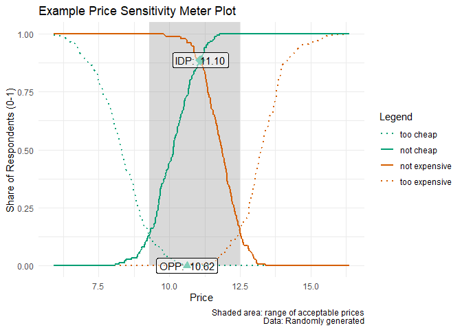

Overview
pricesensitivitymeter is an implementation of the van Westendorp Price Sensitivity Meter (PSM) in R. It also covers the so-called Newton Miller Smith Extension which allows to estimate prices that maximize the reach (trial rate) and the revenue.
The van Westendorp Price Sensitivity Meter is a common method in market research to analyze consumer price preferences and price sensitivity. Examples include OpenAI’s decision how to determine the price for ChatGPT Pro (source).
Installation
As of version 0.2.1, this package is available on CRAN.
# install the stable release from CRAN
install.packages("pricesensitivitymeter")
# install the development version from Github
devtools::install_github("max-alletsee/pricesensitivitymeter")Usage
The main function of the package is psm_analysis() which performs all necessary analyses.
## creating example data
tch <- round(rnorm(n = 250, mean = 8.5, sd = 1), digits = 2)
ch <- round(rnorm(n = 250, mean = 10, sd = 1), digits = 2)
ex <- round(rnorm(n = 250, mean = 12, sd = 0.75), digits = 2)
tex <- round(rnorm(n = 250, mean = 13, sd = 1), digits = 2)
data_psm_demo <- data.frame(tch, ch, ex, tex)
library(pricesensitivitymeter)
## running the analysis
output_psm_demo <- psm_analysis(
toocheap = "tch",
cheap = "ch",
expensive = "ex",
tooexpensive = "tex",
data = data_psm_demo
)
summary(output_psm_demo)
#> Van Westendorp Price Sensitivity Meter Analysis
#>
#> Accepted Price Range: 9 - 12.48
#> Indifference Price Point: 10.94
#> Optimal Price Point: 10.64
#>
#> ---
#> 143 cases with individual price preferences were analyzed (unweighted data).
#> Total data set consists of 250 cases. Analysis was limited to cases with transitive price preferences.
#> (Removed: n = 107 / 43% of data)The package also has a function psm_analysis_weighted() that deals with weighted survey data where the survey design for the weighting is coming from the survey package. (Please see the documentation and the vignette for more details.) Moreover, there is a convenience function psm_plot() that creates the layout for the standard Price Sensitivity Meter plot via ggplot2. Below is a simple example, using the analysis result created above.
library(ggplot2)
psm_plot(output_psm_demo) +
labs(
x = "Price",
y = "Share of Respondents (0-1)",
title = "Example Price Sensitivity Meter Plot",
caption = "Shaded area: range of acceptable prices\nData: Randomly generated") +
theme_minimal()
Additional Information
- Please report any issues or bugs.
- License: MIT
References
Van Westendorp, P (1976) “NSS-Price Sensitivity Meter (PSM) – A new approach to study consumer perception of price” Proceedings of the ESOMAR Congress, 139–167. Online available at the ESOMAR website.
Newton, D, Miller, J, Smith, P, (1993) “A market acceptance extension to traditional price sensitivity measurement” Proceedings of the American Marketing Association Advanced Research Techniques Forum.